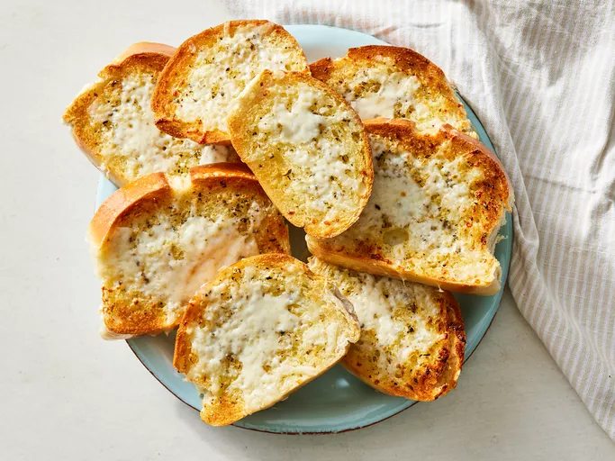

Toasted Garlic Bread

Description
Toasted garlic bread consists of bread (usually a baguette, sour dough, or bread such as ciabatta), topped with garlic and occasionally olive oil or butter and may include additional herbs, such as oregano or chives. It is then either grilled until toasted or baked in a conventional or bread oven.
Ingredients
- 1 (1 pound) loaf Italian bread
- 5 tablespoons butter, softened
- 3 cloves garlic, crushed
- 2 teaspoons extra virgin olive oil
- 1 teaspoon dried oregano
- salt and pepper to taste
- 1 cup shredded mozzarella cheese
Directions
- Gather all ingredients.
- Set an oven rack about 6 inches from the heat source and preheat the oven's broiler. Cut loaf into ten 1-inch slices.
- Set an oven rack about 6 inches from the heat source and preheat the oven's broiler. Cut loaf into ten 1-inch slices.
- Cook under the preheated broiler until slightly brown, checking frequently so they do not burn, about 3 minutes.
- Top bread slices with cheese and return to broiler until cheese is slightly brown and melted, about 2 minutes.
- Serve hot.